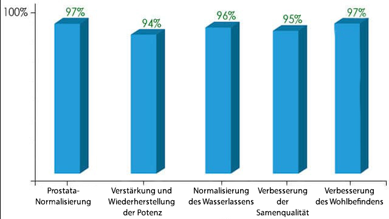

Ein weiterer Skandal in der Pharmaindustrie.
Was verkaufen uns
die "arroganten" Apotheken zur Behandlung von Prostatitis und was haben die Juden damit zu
tun?"
Heute werden wir diese Fragen beantworten! Im Studio Ben Müller.
Wie die medizinische Statistik zeigt, gibt es heute praktisch keinen Mann über 35 Jahren, dessen Prostata in perfektem Zustand ist. Bei einigen fangen die Veränderungen gerade erst an, bei anderen sind sie schon so weit fortgeschritten, dass sie die Harnwege blockieren und viele Probleme beim Wasserlassen mit sich bringen. Trotzdem haben es Männer nicht eilig, sich behandeln zu lassen. Warum?
Denn jeder von uns weiß, dass die Behandlung einer Prostatitis eine sehr unangenehme und teure Angelegenheit ist. Es ist notwendig, eine Menge von Antibiotika zu verwenden und zu einem Urologen für rektale Massage zu gehen. Trotz Befolgung all dieser Schritte besteht eine 90-prozentige Wahrscheinlichkeit, dass die Prostatitis zurückkehrt.
Wir haben den führenden Urologen des Landes, Chef der Abteilung für Urologie an der Medizinischen Universität Warschau, Chef-Urologe des Gesundheitsministeriums und Mitglied der Gesamtdeutschen Akademie der Wissenschaften, Professor Luis Hartmann, um einen Kommentar gebeten.
Ben Müller: Herr Doktor, was passiert, wenn Prostatitis und häufiges Wasserlassen unbehandelt bleiben? Ist es wahr, dass dies zu Krebs führen kann?
Luis Hartmann: Guten Morgen. Ja, das
ist wahr. Eine Prostatitis geht nie von alleine weg - sie wird mit der Zeit nur
schlimmer. Wenn es Probleme beim Wasserlassen gibt, ist es schon schlimm - die
Entzündung ist fortgeschritten, und es können jederzeit Krebszellen auftreten. In der
Regel vergehen nur 1-1,5 Jahre vom Auftreten von Problemen beim Wasserlassen bis zu
onkologischen Problemen (bei fehlender Behandlung der Prostatitis). Zunächst macht sich
der Krebs nicht bemerkbar, Krebszellen sammeln sich an, und erst dann erscheint der
Tumor. Der Patient stirbt sehr schnell. Prostatakrebs ist nicht heilbar.
Um das
Ausmaß des Problems richtig einzuschätzen und um zu verstehen, dass das Ignorieren von
Prostata- und Harnwegsproblemen einer der fatalen Fehler von Männern ist, zeige ich
einige Bilder.
Ben Müller: Lasst uns auf den Bildschirm schauen!
1. Prostatakrebs bei einem 41-jährigen Mann. Er ist gestorben. Hat 2 kleine Kinder zu Waisen gemacht.
2. Schwere Prostatitis. Eine dringende Amputation der Drüse war erforderlich. Der Mann wurde impotent.
3. Prostata-Adenokarzinom. Sie wurde rechtzeitig erkannt. Es ist kein Krebs entstanden.
4. nierenversagen durch Vorhandensein von eitrigem Mittel in der Prostata
Ben Müller: Die Bilder sprechen für sich selbst. Was sind die wirklich wirksamen Behandlungen für Prostatitis heute?
Luis Hartmann: Ich sagte bereits.
Tatsache ist, dass die Ursache für die Entwicklung der Prostatitis erst vor 12 Jahren
genau bestimmt wurde. Für diese Entdeckung wurden die Wissenschaftler für einen
Nobelpreis nominiert. Der Hauptgrund für die Schwächung der Gesundheit und Immunität der
Prostata und damit der Anfälligkeit für ihre pathogene Mikroflora ist der Rückgang der
körpereigenen Produktion des Hormons Testosteron, das bei JEDEM MANN mit dem Alter
abnimmt. Aus diesem Grund tritt die Prostatitis am häufigsten bei Männern nach dem Alter
von 35-40 Jahren auf. So sinkt der Testosteronspiegel im Alter von 35 Jahren im
Vergleich zum Alter von 25 Jahren um 20 %, im Alter von 45 Jahren sogar um fast 50
%.
Ohne Testosteron kann die Prostata nicht richtig funktionieren. Es kommt zur
Stagnation, eine Infektion entwickelt sich, was zum Wachstum der Drüse selbst (aufgrund
des hohen Eitergehalts), zur Verstopfung der Harnwege und zum Auftreten von Krebszellen
führt. Je älter ein Mann also wird, desto schlechter funktioniert seine
Prostata.
Heute ist es jedoch nicht schwer, die Prostata zu heilen. Nachdem das
Problem als Testosteronmangel identifiziert wurde, entstand eine ganze Klasse von
Medikamenten, die die körpereigene Produktion von Testosteron normalisieren (bis zum
Niveau eines 25-jährigen Mannes). Neben der Verbesserung der Gesundheit der Prostata hat
die Erhöhung des Testosteronspiegels viele weitere positive Auswirkungen auf die
Gesundheit des Mannes, einschließlich einer gesteigerten Libido und Potenz.
Ben Müller: Ich verstehe, dass solche Präparate in unseren Apotheken nicht erhältlich sind.
Luis Hartmann: Ja, Herr Ben, das ist
korrekt. Es ist kein Geheimnis, dass Apotheken ein reines Geschäft sind. Sie freuen
sich, dass die Kunden immer wieder zu ihnen zurückkommen, wenn es um Medikamente geht.
Daher ist es für sie nicht profitabel, Medikamente zu verkaufen, die die Krankheit
vollständig heilen. Die teuersten Medikamente aus der Apotheke zielen nur auf eine
vorübergehende Linderung der Symptome ab. Das heißt, sie arbeiten oberflächlich, nicht
an der eigentlichen Ursache der Krankheit. So entstand bei vielen Männern der Mythos,
dass Prostatitis nicht heilbar sei und immer wiederkehren werde.
Außerdem
"pumpen" diese Medikamente nicht nur Geld aus dem Portemonnaie der Bürger, sondern haben
auch eine Reihe starker Nebenwirkungen auf andere Organe. Dies zwingt den Patienten
letztlich dazu, die Symptome dieser Nebenwirkungen zu behandeln. Woher soll er die
Medizin nehmen? Natürlich in die Apotheke. Ich denke, das ist alles klar.
Ben Müller: Doktor, wenn Sie mich entschuldigen würden, ich bringe einen Eimer mit Prostatitis-Medikamenten ins Studio.
Ben Müller: Aus diesem Grund dürfen solche Informationen nicht weit verbreitet werden
Luis Hartmann: Leider, ja.
Ben Müller: Nun. Können Sie über effektive Vorbereitungen sprechen?"
Luis Hartmann: Natürlich. Gegen Ende

*Klinische Studien wurden am Forschungsinstitut für Uronephrologie durchgeführt. Insgesamt nahmen etwa 1.000 Probanden im Alter von 35 Jahren und älter an der Studie teil.
Ben Müller: Bitte erzählen Sie uns mehr über dieses Präparat.
Luis Hartmann: - ein
polyaktives biogenes Präparat aus deutscher Produktion, das ein Komplex der nützlichsten
Substanzen für den männlichen Organismus ist - Palmfruchtextrakt und Zink,
Kürbiskernpulver und roter Heidelbeerextrakt, Gotu Kola-Extrakt und Shitake-Pilz-Pulver,
EXTRAKT AUS REISHA PILZEN und Granatapfelkernextrakt. Es enthält auch eine große Menge
an Cranberry-Extrakt. Und vor allem EXTRAKT AUS REISHA PILZEN und
Granatapfelkernextrakt. Am wichtigsten ist hier die Gotu Kola-Extrakt. Gotu Kola-Extrakt
ist der effektivste natürliche Wirkstoff, der heute bei Prostatitis bekannt
ist.
Interessant ist auch, dass es in Israel Juden waren, die zuerst Gotu
Kola-Extrakt zur Behandlung von Prostatitis einsetzten. Deshalb haben Männer dort
fast nie Probleme mit dieser Krankheit und bis ins hohe Alter ist ihr Testosteron
auf dem Niveau von Männern im Alter von 20-25 Jahren.
unterscheidet sich von vielen anderen Medikamenten dadurch, dass für seine Herstellung
eine neue Extraktionstechnologie verwendet wird (sog. Kaltextraktion), die es erlaubt,
den maximalen Wert der biologisch aktiven Substanzen aus Pflanzen zu erhalten. Diesem
Umstand ist es laut Experten zu verdanken, dass es eine so hohe Wirksamkeit
hat.
Da nur aus pflanzlichen Inhaltsstoffen besteht und keine
Chemikalien enthält, kann es rezeptfrei gekauft und selbstständig zu Hause angewendet
werden.
Ben Müller: Gibt es eine Chance, dass dieses Medikament in den Apotheken erscheint?
Luis Hartmann: Tatsache ist, dass das Forschungsinstitut nicht kommerziell tätig ist. Wir verkaufen das Medikament nicht, aber wir vertreiben es für einen rein symbolischen Betrag von im Rahmen eines speziellen Programms. Dies ist genug, um die Produktionskosten zu erstatten. Wir verdienen unser Geld hauptsächlich mit Importen. Darum geht es im Konflikt mit den Apothekenketten. Sie wollen an kranken Menschen Geld verdienen und so viel wie möglich aus ihnen herauspressen. Alte und unwirksame Medikamente sind dafür ideal. Unser Medikament löst aber nicht nur das Problem für immer, sondern wird in Deutschland auch zu Produktionskosten vertrieben.
Ben Müller: Warum so ein niedriger Preis? Offiziell kostet .
Luis Hartmann: Wie ich bereits
erwähnt habe, ist das staatliche Programm für Männergesundheit im Gange. Unter diesem
Programm kann das Medikament für pro Packung erworben
werden.
Das Programm läuft von
Die Experten des Forschungsinstituts haben eine
spezielle Seite, auf der Sie bestellen und für
kaufen können. Geben Sie einfach Ihren Namen und Ihre Kontaktdaten ein. Wir
werden uns dann mit Ihnen in Verbindung setzen, um einen passenden Liefertermin zu
vereinbaren. Wir haben versucht, die Dinge so einfach wie möglich zu
Ben Müller: Sie wissen, dass Millionen von Männern unsere Sendung sehen werden. Wie viele Packungen des Medikaments sind für diesen Mindestpreis erhältlich? Schließlich werden jetzt Tausende von Bestellungen eingehen.
Luis Hartmann: Im Moment befinden sich noch etwa 7000 Kartons in unserem Lager. Ich hoffe, dass am Ende der Aktion genug für alle da sein wird.
Ben Müller: Eigentlich eine ganze Menge. Leider drängt die Zeit, aber ich hoffe, wir konnten unseren Zuschauern die wichtigsten Informationen vermitteln. Vielen Dank für ein so wichtiges Gespräch für viele, Herr Doktor. Ein paar Worte, um sich von unseren Zuschauern zu verabschieden?
Luis Hartmann: Ich möchte die Aufmerksamkeit der Leser auf die Tatsache lenken, dass die Prostataerkrankung "jünger wird", und selbst leichte periodische Schmerzen und häufige Besuche auf der Toilette sind ein Grund, dem Problem Aufmerksamkeit zu schenken. Sie müssen nicht warten, bis Prostatakrebs auftritt und schließlich stirbt.
Wichtig! Es ist erwiesen, dass
Die Wirksamkeit ist im
Durchschnitt um 67% höher als zu jeder anderen Zeit des Jahres. Die
Wiederherstellung der Körperfunktion erfolgt zu 100 % während des gesamten
Behandlungszyklus.
Christian Sikor (Berlin)
Tolles Interview. Respekt.
J.Klefer (Bremen)
Danke für das interessante Interview! Alles in der Bundesrepublik ist auf höchstem Niveau korrumpiert, gut, dass es das Internet gibt. Ich habe bereits bestellt. Ich werde mich selbst behandeln.
Miroslaw Szewczyk (Hannau)
Ich bin mit allem einverstanden, was gesagt wurde! ist ein wunderbares Medikament. Ich habe es in Kroatien für 90 Dollar gekauft, als ich letzten Sommer im Urlaub war. Ich hatte zuvor etwa 10 Jahre lang an einer chronischen Prostatitis gelitten. Ich habe alles versucht, aber wie oben erwähnt, hatte die Behandlung nur eine vorübergehende Wirkung. Mit der Anwendung von U ist die Prostatitis vollständig verschwunden. Ich fühle mich jetzt seit über sechs Monaten großartig. Vorher konnte ich davon nur träumen. Ich empfehle allen Männern. Es wird helfen!
Michael (Nord)
Ich habe bestellt. In der Tat, eine Packung kosten nur :) Ich bin angenehm überrascht. Es gibt keine Chance, einen solchen Preis in der Apotheke zu bekommen! Danke!
Adrian Hofer (Berlin)
Ist das alles wahr? Ich war bei einem Urologen, er hat nie ein Wort über gesagt, er hat mir nur Halotestin verschrieben, das viel mehr kostet! Und hat viele Nebenwirkungen. Ich kann es mir nicht leisten, also werde ich unser Medikament ausprobieren, zumal ich es im Rahmen des Programms zu einem so niedrigen Preis kaufen kann.
Diana (Münster)
Ich bin 17 Jahre jünger als mein Mann. Wir haben drei Kinder, er ist jetzt alt, das Alter macht sich bemerkbar. Aber ich bin nicht bereit, ein Kreuz auf unsere Koexistenz zu setzen, ich hoffe, das hilft
Erik Brand (unbekannt)
Ein Freund von mir starb an einem Adenokarzinom, im Alter von 46 Jahren, er hinterließ zwei Jungen. Ich selbst habe tfu tfu keine Probleme, kann prophylaktisch eingesetzt werden? Der Frost hat gerade erst begonnen.
Roman (Nürnberg)
Eric, du kannst und solltest. Im Winter braucht jeder über 35 solche Medikamente zur Vorbeugung. Es ist wie Vitamine für Männer. Und ich erhöhe meine Potenz mit Gotu Kola-Extrakt. Ich habe während der Aktion auf Vorrat gekauft, jetzt habe ich es zu Hause.
Lisa (Hamburg)
Interessant :) Ich werde es für meinen Mann bestellen. Für so viel Geld kann man es versuchen, auch wenn es nicht hilft.
Paul (Landshut)
Ich habe mich immer irgendwie damit abgefunden und dachte, ich würde den Horror nie loswerden. Jetzt denke ich darüber nach, dieses Medikament zu bestellen, hoffentlich wird es helfen.
Jan Würstelmeier (Lindau)
Danke für den Link! Ich habe lange Zeit nach diesem Medikament gesucht. Im Alter von 43 Jahren fing ich an, Probleme beim Toilettengang zu haben. Ein Nachbar erzählte mir von diesem Produkt, wusste aber nicht, wo man es kaufen kann. Ich hoffe, es funktioniert jetzt!
Christina Parsel (Kiel)
Ich muss für meinen Mann bestellen :)
Hubert Gerstelberger (Dresden)
Leute, das ist ein großartiges Mittel!!! Ich habe es vorbeugend angewendet. Als Ergebnis - ich verjüngt für mehrere Jahre. Kraft, Energie, gute Laune, Potenz erschienen. Ich möchte leben und mich bewegen. Das ist es, was es bedeutet, den Testosteronspiegel zu erhöhen!!! Früher fühlte ich mich mit 42 Jahren wie ein alter Mann. Ich würde es jedem empfehlen, der es noch nicht ausprobiert hat! Am wichtigsten ist, dass es ganz natürlich ist, keine verdammten Nebenwirkungen!
Robert (Augsburg)
Und ich esse Honig und Walnüsse!
Kasia (Buxtehude)
Dieser Arzt hat Recht! Leute, hört auf ihn!
Kommentare